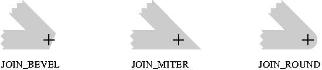
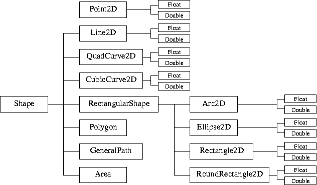

La première version du graphisme en java était assez pauvre. Les outils de dessins étaient rudimentaires. Ils offraient des méthodes draw et fill pour les lignes, rectangles, ovales et polygones, deux modes de dessin (direct ou xor) et une zone de découpe (clipping). Le graphisme de Java 2 propose des possibilités plus sophistiquées :
En Swing, le double buffering est automatique.
L'outil de dessin est le contexte graphique. C'est un objet de la classe Graphics ou de sa classe dérivée Graphics2D pour Java 2. Cet objet encapsule toute l'information nécessaire au dessin sous forme d'un état graphique qui comporte en autres les propriétés suivantes.
Un contexte graphique peut être obtenu soit
La dernière méthode est à préférer. L'acquisition explicite d'un contexte graphique est souvent le signe d'une mauvaise programmation. Un contexte graphique utilise des ressources système. L'acquisition explicite d'un contexte graphique doit être accompagnée d'une libération explicite par la méthode dispose().
L'acquisition explicite est cependant nécessaire pour dessiner dans une image BufferedImage. Un exemple typique d'une telle utilisation est la suivante.
// Création d'une image Image image = new BufferedImage(100, 100, BufferedImage.TYPE_INT_ARGB); // Contexte graphique de l'image // Méthode identique à getGraphics mais de type Graphics2D // Graphics2D g2 = (graphics2D) image.getGraphics(); Graphics2D g2 = image.createGraphics(); // Utilisation de g2 ... // Libération g2.dispose();
En Swing, c'est dans cette méthode que doit être fait les dessins d'un composant. Cette méthode est définie dans la classe JComponent. C'est en redéfinissant cette méthode que l'on peut ajouter des instructions de dessin
En AWT, la méthode paintComponent n'existe pas et c'est la méthode paint qui doit être redéfinie pour ajouter du dessin. En Swing, la méthode paint existe encore mais elle ne doit pas être redéfinie.
Par défaut, la méthode paintComponent appelle la méthode ComponentUI.update() qui efface et redessine le fond si le composant est opaque (comme JPanel par défaut). Lorsque la méthode paintComponent est redéfinie, la méthode de la classe mère doit être appelée par super.paintComponent pour conserver l'appel à ComponentUI.update().
la méthode paintComponent reçoit en paramètre un objet de type Graphics mais la classe réelle de ce contexte graphique est toujours Graphics2D. Afin de pouvoir utiliser toutes les possibilités du graphisme de Java 2, il faut le convertir en un objet de type Graphics2D.
En tenant compte des dernières remarques, une redéfinition de la méthode paintComponent prend la forme classique suivante.
public void paintComponent(Graphics g) {
// Appel de la méthode paintComponent de la classe mère
super.paintComponent(g);
// Conversion en un contexte 2D
Graphics2D g2 = (Graphics2D) g;
// Utilisation de g2
...
Le code de la méthode paintComponent ne doit pas modifier de façon permanente le contexte graphique passé en paramètre. Si c'est nécessaire de le modifier, il faut soit le cloner et modifier le clone soit restituer l'état initial après utilisation.
La méthode paintComponent est appelée à chaque fois que le composant nécessite d'être redessiné, par exemple s'il a été masqué. Pour forcer le dessin d'un composant, il faut appeler la méthode repaint(). Le principe de fonctionnement est le suivant.
Puisque plusieurs appels à update peuvent être regrouper, il ne faut pas hésiter à appeler repaint dès que nécessaire. Ceci ne ne ralentit pas l'application par des dessins intempestifs.
La classe Graphics définit des méthodes pour dessiner et remplir des lignes, des rectangles, des ovales et des polygones. Ces méthodes peuvent être remplacées par les deux méthodes générales draw(Shape) et fill(Shape) définies par la classe Graphics2D. Elle demeurent cependant utiles pour des dessins élémentaires. Un exemple typique d'utilisation est le suivant qui dessine une ligne en diagonale d'un panneau de classe JPanel.
public void paintComponent(Graphics g) {
// Appel de la méthode de la classe JPanel
super.paintComponent(g);
// Largeur et hauteur du panneau
int width = getWidth();
int height = getHeight();
// Dessin d'une ligne en diagonal
g.drawLine(width/4, height/4, 3*width/4, 3*height/4);
}
Certaines de ces méthodes sont surchargées pour prendre en paramètre un objet ou des coordonnées. La liste de ces méthodes est la suivante.
La chaîne de traitement est la suite des opérations qui sont effectuées pour aboutir à l'affichage d'un objet graphique. On distingue trois grandes étapes qui chacune regroupe plusieurs opérations élémentaires. Ces trois grandes étapes sont les suivantes.
Cette chaîne de traitement se traduit en Swing par le squelette de code suivant.
public void paintComponent(Graphics g) {
// Appel de la méthode paintComponent de la classe mère
super.paintComponent(g);
// Conversion en un contexte 2D
Graphics2D g2 = (Graphics2D) g;
// Contexte graphique
RenderingHints hints = ...
g2.setRenderingHint(hints);
// Trait
Stroke stroke = ...
g2.setStroke(stroke);
// Remplissage
Paint paint = ...
g2.setPaint(paint);
// Composition
Composite composite = ...
g2.setComposite(composite);
// Zone de découpe
Shape clip = ...
g2.setClip(clip);
// Transformation des coordonnées
AffineTransform at = ...
get.transform(at);
// Définition de la forme
Shape shape = ...
// Affichage
g2.draw(shape); // Contour
g2.fill(shape); // Remplissage
Le rendu réalisé par le contexte graphique peut être influencé par des indications. Ces indications sont des associations entre des clés et des valeurs. Par exemple, la clé KEY_RENDERING peut être associée aux valeurs VALUE_RENDER_DEFAULT, VALUE_RENDER_QUALITY ou VALUE_RENDER_SPEED pour indiquer que le rendu doit favoriser la qualité ou la vitesse. Les noms des clés et des valeurs sont définis dans la classe RenderingHints. La méthode setRenderingHint de Graphics2D permet de changer la valeur associée à une clé. Un exemple typique d'utilisation est le suivant.
g2.setRenderingHint(RenderingHints.KEY_ANTIALIASING,
RenderingHints.VALUE_ANTIALIAS_ON);
g2.setRenderingHint(RenderingHints.KEY_RENDERING,
RenderingHints.VALUE_RENDER_QUALITY);
La liste des clés et des valeurs qui peuvent leur être associées est la suivante.
| Clé | Valeurs |
|---|---|
| KEY_RENDERING | VALUE_RENDER_DEFAULT VALUE_RENDER_QUALITY VALUE_RENDER_SPEED |
| KEY_COLOR_RENDERING | VALUE_COLOR_RENDER_DEFAULT VALUE_COLOR_RENDER_QUALITY VALUE_COLOR_RENDER_SPEED |
| KEY_DITHERING | VALUE_DITHER_DEFAULT VALUE_DITHER_DISABLE VALUE_DITHER_ENABLE |
| KEY_ANTIALIASING | VALUE_ANTIALIAS_DEFAULT VALUE_ANTIALIAS_OFF VALUE_ANTIALIAS_ON |
| KEY_TEXT_ANTIALIASING | VALUE_TEXT_ANTIALIAS_DEFAULT VALUE_TEXT_ANTIALIAS_OFF VALUE_TEXT_ANTIALIAS_ON |
| KEY_INTERPOLATION | VALUE_INTERPOLATION_BICUBIC VALUE_INTERPOLATION_BILINEAR VALUE_INTERPOLATION_NEAREST_NEIGHBOR |
| KEY_ALPHA_INTERPOLATION | VALUE_ALPHA_INTERPOLATION_DEFAULT VALUE_ALPHA_INTERPOLATION_QUALITY VALUE_ALPHA_INTERPOLATION_SPEED |
| KEY_FRACTIONALMETRICS | VALUE_FRACTIONALMETRICS_DEFAULT VALUE_FRACTIONALMETRICS_OFF VALUE_FRACTIONALMETRICS_ON |
| KEY_STROKE_CONTROL | VALUE_STROKE_DEFAULT VALUE_STROKE_NORMALIZE VALUE_STROKE_PURE |
L'interface Stroke est implémentée par les objets qui encapsulent les propriétés du trait. Seule la classe BasicStroke implémente cette interface. Elle permet de spécifier l'épaisseur du trait, le type des terminaisons et le type des raccordements.
Les trois types de terminaison pour les segments sont les suivants. La croix marque l'extrémité du segment avant l'ajout de la terminaison.
Les trois types de raccordement entre les segments sont les suivants. La croix marque le point de raccordement des deux segments. Le raccordement de type JOIN_MITER dépend en outre du paramètre miterlimit qui spécifie la taille maximale de la pointe.

Fig. 2 : Types de raccordement
Un exemple typique d'utilisation est le suivant qui spécifie une épaisseur de 1,5 unités, des terminaisons de type CAP_SQUARE, des raccordements de type JOIN_MITER et une limite miterlimit de 10 unités.
Stroke stroke = new BasicStroke(1.5f, BasicStroke.CAP_SQUARE,
BasicStroke.JOIN_MITER, 10.0f);
L'interface Paint est implémentée par les objets qui spécifient un type de remplissage. Elle est implémentée par les classes Color, GradientPaint, TexturePaint.
La classe Color définit des constantes black, blue, cyan, … pour les principales couleurs. Une couleur peut aussi être créée en donnant les composantes RGB et éventuellement une composante α de transparence.
La classe GradientPaint permet de définir un dégradé. Celui-ci est donné par le point et la couleur de départ ainsi que le point et la couleur d'arrivée.
La classe TexturePaint permet de remplir une zone en la pavant avec une image BufferedImage.
La composition permet de préciser comment la couleur mise sur un point se mélange avec la couleur déjà présente sur le point. Le comportement classique est que la nouvelle couleur recouvre et cache l'ancienne couleur comme avec la peinture à l'huile. Il est aussi possible que la nouvelle se mélange avec l'ancienne pour donner une nouvelle couleur comme avec l'aquarelle.
L'interface Composite est implémentée par les objets qui définissent ce comportement. Elle est seulement implémentée par la classe AlphaComposite. Cette classe propose onze modes de composition des couleurs qui sont définis par des constantes.
L'applette ci-dessous permet d'expérimenter les différents modes de composition proposés par la classe AlphaComposite.
Le contexte graphique contient une transformation affine qui transforme les coordonnées de l'espace utilisateur (programmeur) en les coordonnées du système d'affichage (écran, imprimante). Ceci est indispensable car les écrans et les imprimantes n'ont pas les mêmes résolutions. Cette transformation peut être modifiée, par exemple pour centrer le repère au milieu de la zone. La transformation à appliquer doit être composée avec la transformation déjà présente plutôt que la remplacer. Un exemple typique d'utilisation des méthodes transform, getTransform et setTransform est le suivant.
// Sauvegarde de la transformation AffineTransform save = g2.getTransform(); // Translation de l'origine au milieu de la fenêtre g2.translate(getWidth()/2, getHeight()/2); // Application d'une autre transformation g2.transform(...); // Dessin ... // Restitution de la transformation initiale g2.setTransform(save);
Les transformations directement disponibles sont les suivantes. Il est possible d'utiliser n'importe quelle transformation affine en donnant une matrice au constructeur de AffineTransform.
L'applette ci-dessous permet d'expérimenter les différentes transformations et de les combiner.
L'interface Shape est implémentée par toutes le classes qui définissent les formes géométriques. Les principales méthodes déclarées sont les suivantes.
L'itérateur retourné par la méthode getPathIterator est un objet de la classe PathIterator. Il permet de décomposer la contour de la figure en segments élémentaires qui peuvent être des déplacements sans tracé, des lignes et des splines. Sa méthode currentSegment retourne le segment courant et sa méthode next passe au suivant.
La hiérarchie des classes des formes géométriques est la suivante. La classe Point2D des points de dérive pas de la classe Shape car un point n'est pas une forme. En Java 2, les coordonnées des points sont des flottants de type float ou double. La plupart des classes comme Point2D ont deux classes dérivées comme Point2D.Float et Point2D.Double pour les objets avec coordonnées de type float et double. Dans ce cas, la classe principale comme Point2D ne peut pas être instanciée (soit parce qu'elle est abstraite soit parce que le constructeur n'est pas public).

Fig. 3 : Hiérarchie des classes de formes
Les classes QuadCurve2D et CubicCurve2D sont pour les Splines (quadratiques et de Bézier). Contrairement aux autres classes, les coordonnées de la classe Polygon sont de type int. La classe GeneralPath est à utiliser pour un chemin constitué de lignes et de splines. La classe Area est pour manipuler des zones quelconques contruites par combinaison (union, intersection, …) de zones élémentaires (rectangles, ellipses, …).